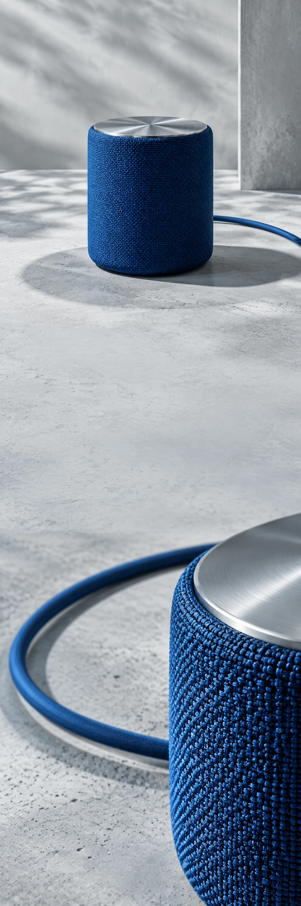

Play.
Dezelfde kamer.
Ander gevoel.

Geef het eerste
nummer de ruimte.
Een uitgesproken vorm. Een plek naast je boek. Een speakerconcept voor alles wat een dag kan worden als je muziek aanzet.
Ontdek ALTOALTO SOUNDFor the room
you're in.
you're in.